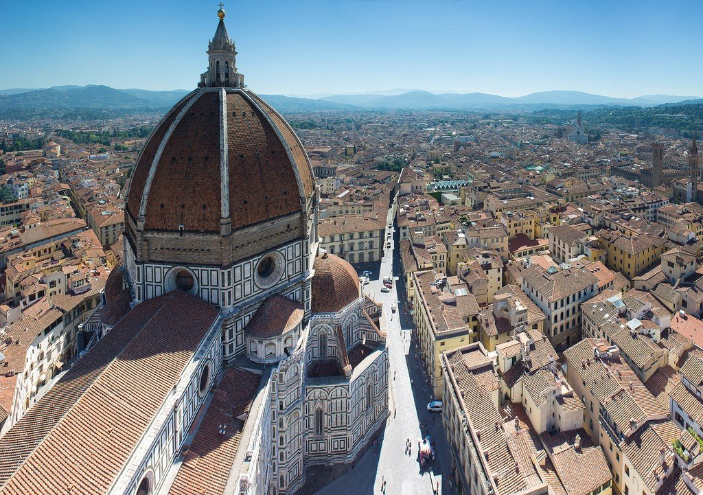

Саме Флоренція в 1339 році стала першим містом в Європі з брукованими вулицями.
Так що Рим звичайно прекрасний, але він не був першим у всьому.
У Флоренції з 14 по 18 століття проживало відоме сімейство Медичі.
Тут же народилися Леонардо да Вінчі, Галілео Галілей, Донателло, Макіавеллі, Роберто Каваллі та Гуччі Гуччі.
Це все про Флоренцію, дякую вам за увагу
Sudent NAU FCCSE
Panasiyk Oleksandr